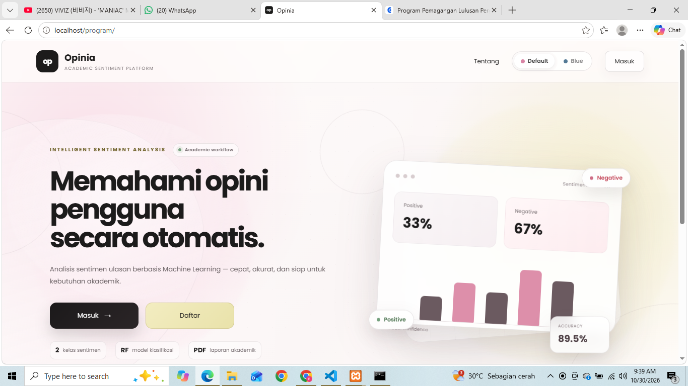
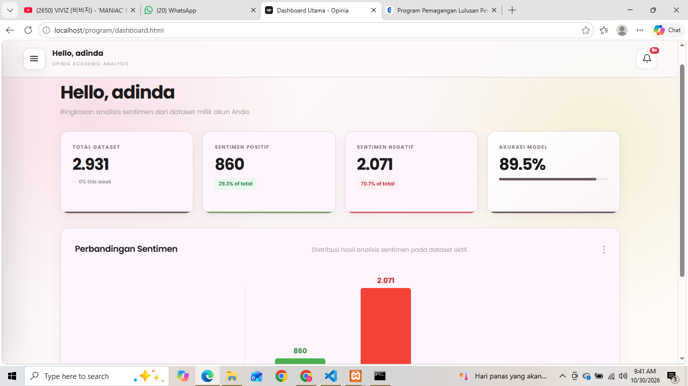
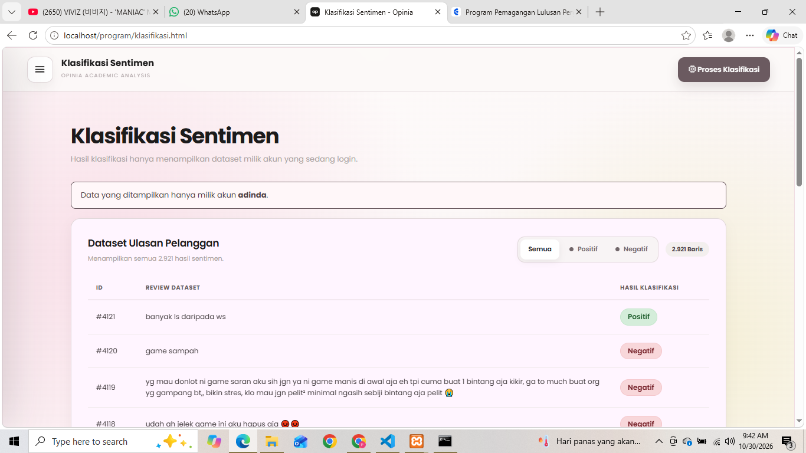
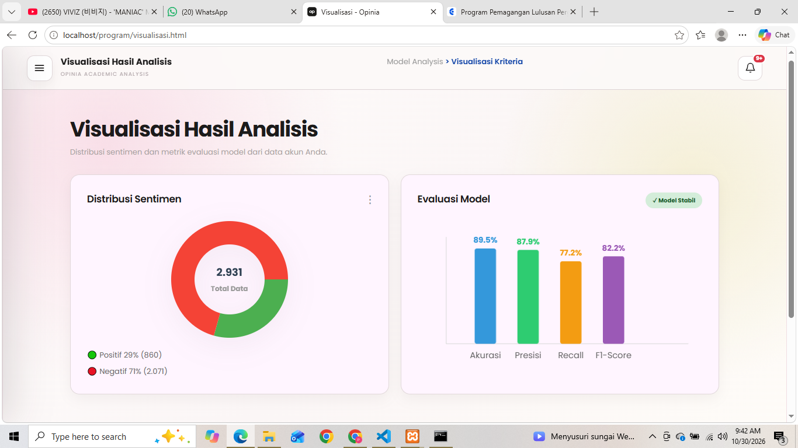
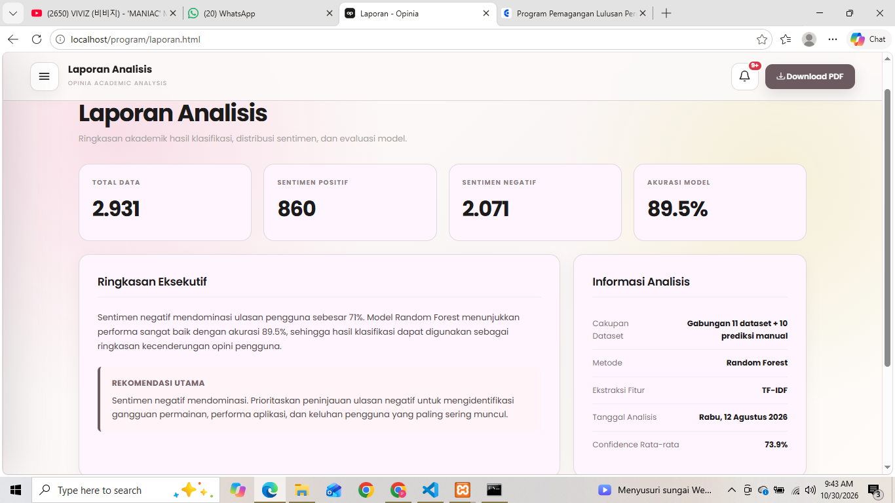
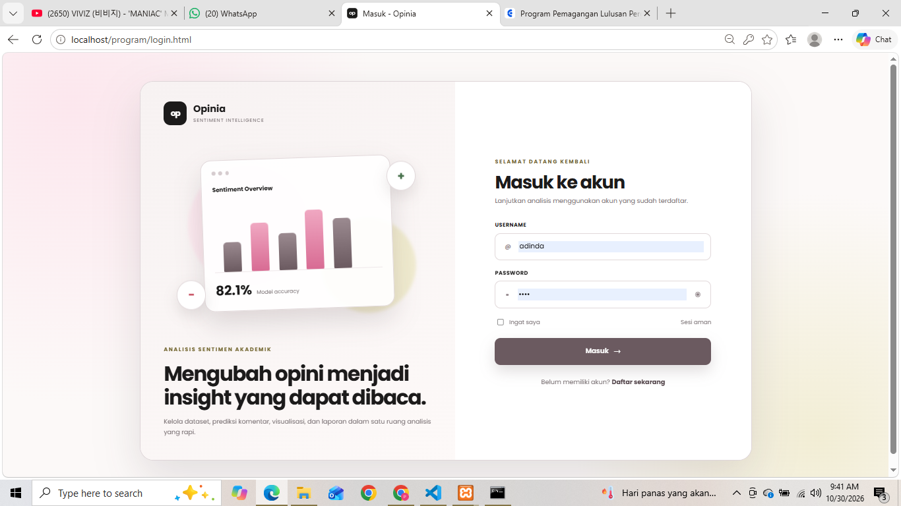

Universitas Indraprasta PGRI
S1 Teknik Informatika
PORTFOLIO • INFORMATIKA
Lulusan Teknik Informatika yang tertarik pada pengolahan data, pengembangan aplikasi, dan teknologi informasi.
Terus belajar, mencoba, dan mengembangkan hal baru melalui proyek nyata.
Adinda Fina Oktaviani
Informatics · Data · Web
01 / KENALI SAYA
Saya memiliki latar belakang pendidikan S1 Teknik Informatika di Universitas Indraprasta PGRI. Saya pernah mengikuti Program Studi Independen Bersertifikat (MSIB) Batch 7 di TIA Academy dengan pembelajaran Java, Python, Data Science, Data Visualization, Machine Learning, dan Deep Learning.
Dalam proyek akademik, saya mengembangkan Opinia, aplikasi web untuk analisis sentimen ulasan Mobile Legends: Bang Bang menggunakan TF-IDF dan Random Forest.
02 / LATAR BELAKANG
S1 Teknik Informatika
Java & Python for Data Science with BNSP Associate Data Scientist
03 / APA YANG SAYA KERJAKAN
Proyek akademik dan praktik pelatihan yang menjadi bagian dari proses belajar saya.
01 / PROYEK SKRIPSI
Aplikasi web untuk mengelola dataset dan menganalisis sentimen ulasan pengguna Mobile Legends: Bang Bang dari Google Play Store.
Aplikasi berjalan secara lokal · Deployment online masih dalam pengembangan
Lihat repository GitHub ↗
Lihat tampilan aplikasi ↗OPINIA / SCREEN GALLERY
Klik gambar untuk melihat ukuran penuh.

DashboardRingkasan data dan performa model
Klasifikasi sentimenHasil positif dan negatif
VisualisasiDistribusi dan metrik evaluasi
Laporan analisisRingkasan hasil dan informasi analisis
LoginHalaman autentikasi pengguna02 / MSIB • PRAKTIK
Praktik membuat aplikasi peramalan suhu, kelembapan, dan kecepatan angin berbasis Flask yang dijalankan menggunakan Docker.
03 / MSIB • PRAKTIK
Praktik operasi CRUD pada MongoDB menggunakan PyMongo serta analisis sentimen menggunakan Streamlit.
04 / MSIB • FINAL PROJECT
Praktik pemilihan dataset Kaggle, pembuatan dan perbandingan model, penyimpanan model dengan Joblib, serta menjalankan script Python dari Java menggunakan ProcessBuilder.
05 / MSIB • PRAKTIK
Demonstrasi integrasi API melalui Postman dan localhost sebagai bagian dari checkpoint proyek akhir.
04 / KEMAMPUAN
05 / TERHUBUNG
Terbuka untuk kesempatan kerja, kolaborasi, dan kesempatan belajar di bidang teknologi informasi.